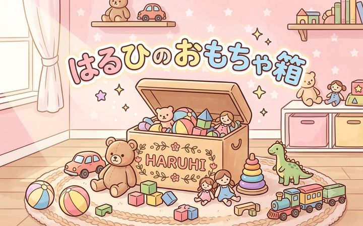
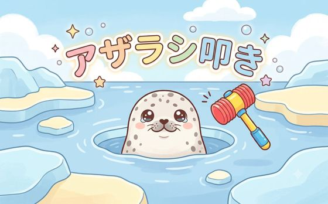
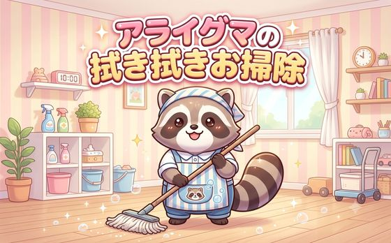
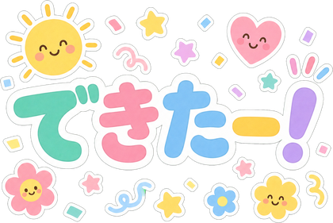
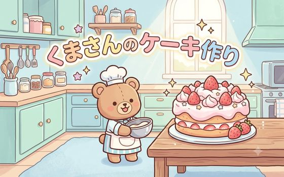

3歳の娘のための、ミニゲーム集アプリ。
アイデアが生まれてから、最初のアプリ（v1.0）が形になるまでの道のり。
この時期の制作は、Git（変更履歴を自動で残す仕組み）を使わずに進めていました。 そのため「どんな順で、何を考えて作ったか」という過程が、記録として残っていません。
そこでこの開発記録では、当時の作業メモ（ネロとジョーの引き継ぎノート）と記憶を頼りに、
アイデアが生まれた日から、最初のアプリ（v1.0）が完成するまでを、判断の理由つきで書き起こしました。
ここで作り上げた「動くHTMLプロトタイプ」を、Androidアプリ（APK）に包む続きの物語は、姉妹編
制作記録.md に続きます。この記録は、その前日譚です。
「全部AIにやらせる」のではなく、判断は人間が握り、手数をAIに預ける形で進めました。
アイデア → 3つのゲーム → 音 → 「おわり」の設計 → 最初のアプリ
発端は、はるひに渡していた14年前のAndroidタブレットでHTMLゲームを動かしたいという相談でした。 手元にあった1本のゲーム「くまさんキャッチ」（落ちてくるフルーツを籠で受けるだけ・罰なし・終わりなし）を、 この古い端末（Android 7.0）で崩れず動かすところから始まりました。
古い端末では新しい絵文字が「豆腐（□）」に化けたり、文字が極端に小さくなったりします。そこで ゲーム性は一切変えず、保険のコードだけを足しました（新しい絵文字を古い定番に置き換える、 文字サイズに古い端末用の指定を併記する、など）。
そして相談は「1本のゲーム」から「複数のミニゲームを1つのアプリにまとめたい」へ広がり、 プロジェクト名が決まりました ―― 「はるひのおもちゃ箱」。 表紙（箱）を開くと、中からゲームを選んで遊べる。ここから“箱づくり”が始まります。

方針は「ホームページ制作で身につけた作法を、ゲームにも当てはめる」。 原本と製品を分ける・画像は軽量化してファイルで持つ・HTMLとCSSを分ける・共通部品は1か所に。 遊びでも“1段上の品質”を目指す、というジョーの構えです。
2つ目のゲームは「アザラシ叩き」。仮の図形から本物の手描きの絵に差し替えました。 穴からアザラシがせり上がり、タップするとハンマーがポコッ。叩かれると笑顔の顔に切り替わります（罰はなし）。

ここで効いたのがジョー発案の「5層構造」。ただ絵を重ねるのではなく、 背景・穴の前ふち・アザラシ…と層を分けて重ね、アザラシが穴の“中から”出てくる奥行きを作りました。 穴4つの位置は、実機のタブレットで見ながら一発で決定。
設定パネルも「親がサッと調整して閉じる」前提で1項目だけに絞り込み。機能を足すより、 3歳児が触っても迷わないよう“削る”方向で整えました。
3つ目は「アライグマ拭き拭き」。曇った窓を指でこすると、下からどうぶつがピカッと現れる遊びです。 仕組みはCanvasの“消しゴム”機能（destination-out） ―― ジョーが昔さわったFlashの消しゴムと同じ発想で、 こすった場所のよごれだけを消していきます。

この日、もうひとつ土台ができました。全ゲーム共通の効果音システムです。
音のファイルはshared/se/という1か所にまとめ、各ゲームは同じ小さな呼び出し（se('名前')）で鳴らす。
置き場を共通にしておけば、音の追加も差し替えも1か所で済む。ホームページ作りと同じ「共通部品は1か所」の考え方です。
ANIMALSという並びに名前を1つ追加）。
ゲームを“作り込む”だけでなく、あとで楽に育てられる形にしておく。これがこのプロジェクト全体のテーマ＝省力化です。
ジョーが集めた音源を使って、音を本格導入しました。BGM 4曲＋効果音 6種。 さらに大切なのが、親のための音量設定パネルです。BGMと効果音をそれぞれ1〜5段階＋ミュートで調整でき、 その設定は端末に保存されて次回も引き継がれます（共通モジュールが記録し、各ゲームが読む）。
画面を切り替えるボタンは、クリック音を鳴らしてから“ほんの一瞬”置いて遷移するように。 音がプツッと切れないための、小さな気づかいです。箱のアイコンの見た目もこの日に整えました。
credits.txtに記録。作る楽しさは人が持ち、面倒な繰り返しはAIが引き受ける ―― この形が心地よく回り始めた頃です。
最初、タイトル画面の真ん中には「はじめる」ボタン（ピンクのキャンディ）を置いていました。 でも、これが背景イラストの一番いい所を隠していたのです。
そこで発想を変え、ボタンをなくして「タイトルのどこを押してもスタート」に。 画面の下に「タップで スタート」の文字がふわふわ弾むだけ。 おかげで3つのゲームとも、タイトル絵が全部きれいに見えるようになりました。役目を終えたキャンディは削除。
仮のグラデーション背景だったアライグマ拭き拭きに、本物の素材が揃いました。 こすると現れるどうぶつは全10匹（キリン・ゾウ・ウマ・ネコ・イヌ・ウサギ・トリ・サカナ…に、 他ゲームからの“借り物”でクマとアザラシも特別出演）。お部屋の背景と、左でモップを持つお掃除屋さんも配置しました。
この日の中心は、ジョーがはるひと一緒に遊んで気づいたことから始まりました。
「子どもは、終わりが無いと一生遊んでしまう。
“あと1回ね”が言える区切りが要る。」
そこで3つのゲームすべてに「クリア（＝おわり）」を入れました。 くまさんはフルーツ20個でケーキ完成、アザラシは飴を20個、アライグマは星を5個 ―― 集め終わると、 お祝いの演出が出てタイトル画面に戻ります。ここが自然な“区切り”になります。
集めたものはピコッと飛んでトレイに収まる気持ちいい演出に。そして完成の瞬間、 画面いっぱいに「できたー！」がポンッと弾けて、ふわふわ揺れる ―― お祝いの音も、うんと華やかにしました。

ジョーが実機で通しチェックしながら、気になった点を1つずつ直していきました。中でも面白かったのが 「くまさんが向きを変えると体が横にワープする」不具合。
原因は、くまさんの絵が「ボウルを片手で抱えた左右非対称の絵」で、片側に透明な余白が寄っていたこと。 左右反転すると、絵の中心を軸に回るので体が飛んでしまう。絵は一切いじらず、 反転の“軸”を見た目の中心に置き直すことで解決しました（＝道具のクセを、絵ではなく設定で吸収）。

箱ができ、3つのゲームが揃い、音が鳴り、「おわり」の区切りが入った ――
ここまでで「動くHTMLプロトタイプ」が完成しました。
この土台を Androidアプリ（APK）に包んで、はるひのタブレットに届けたのが v1.0 です。
その“包む”物語（つまずいた _shared 事件、実機テスト、v1.3までの仕上げ、そして
はるひに届いて喜んでもらえた日）は、姉妹編 制作記録.md に続きます。